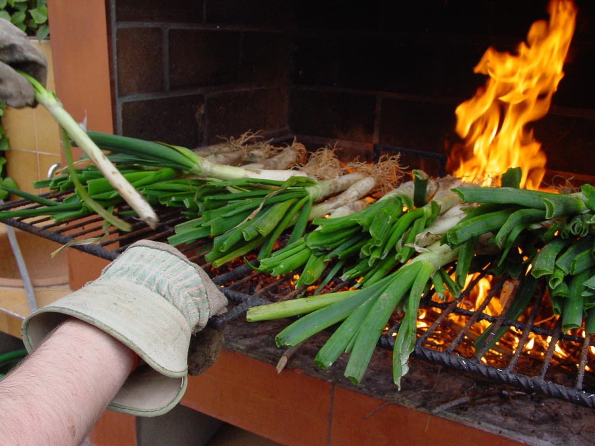
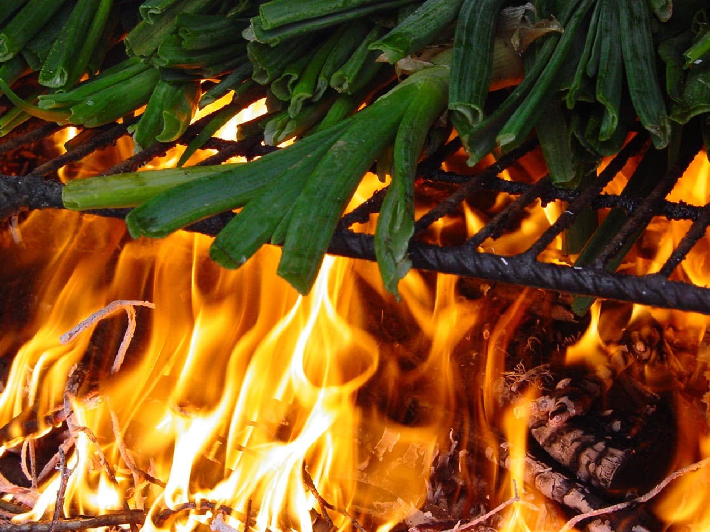
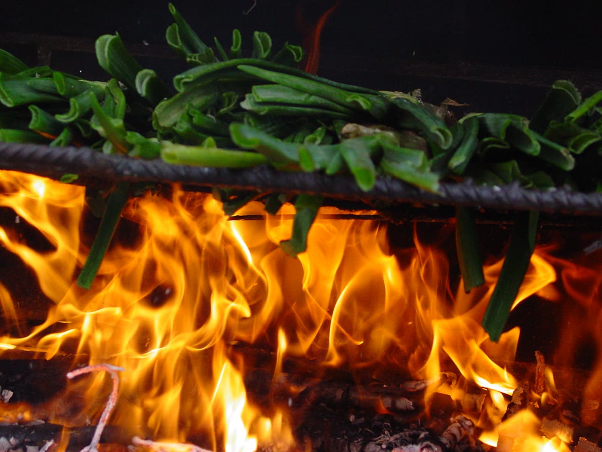
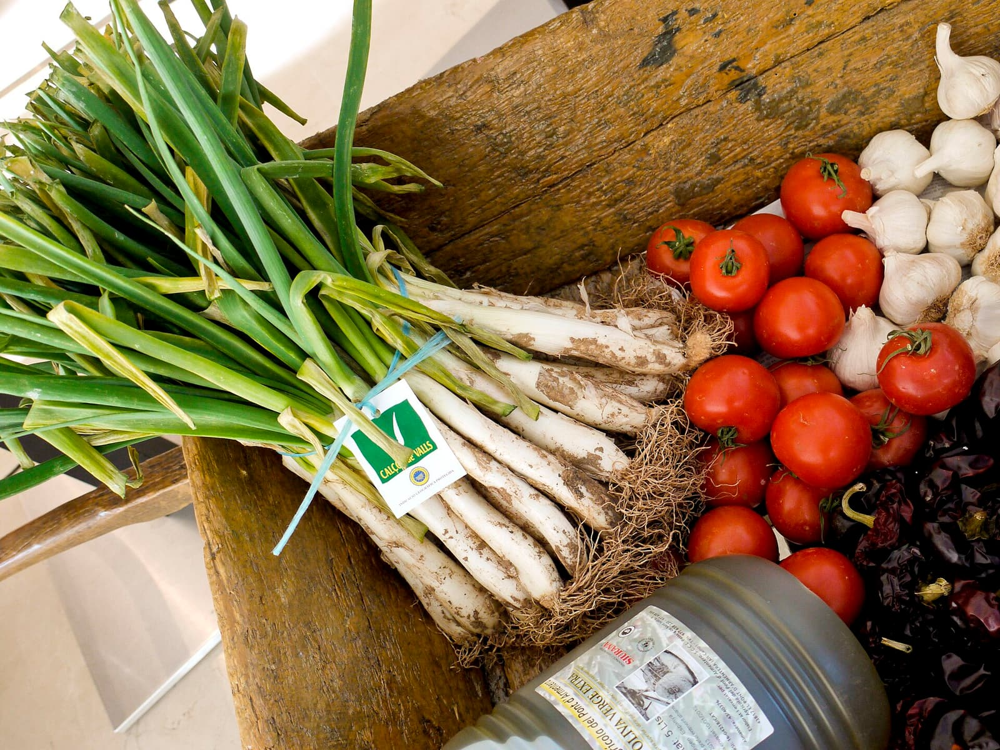
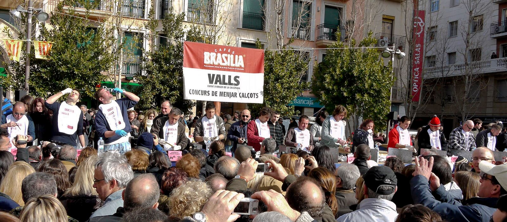
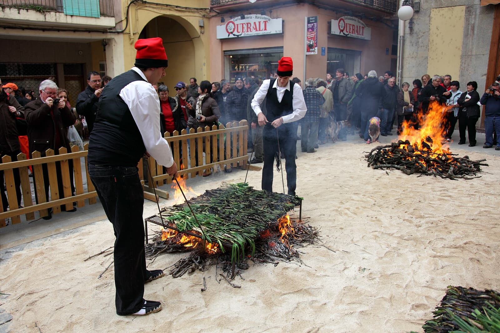

Nadie te avisa de que vas a acabar negro
Hay un momento, en toda primera calçotada, en el que descubres que no tienes ni idea de lo que estás haciendo. Suele llegar unos treinta segundos después de que te pongan delante la teja.
Hasta ahí todo había ido bien. Habías llegado, habías saludado, te habían dado un babero de papel que te hacía sentir vagamente ridículo y te lo habías puesto igual, porque todo el mundo se lo ponía. Y entonces aparece la teja. Una teja de verdad, de las de tejado, con veinte bultos negros encima que hace media hora eran cebollas y que ahora parecen material de derribo.
El resto de la mesa se lanza sin pensarlo. Tú miras. Y en ese instante entiendes que una calçotada no es exactamente una comida: es un examen práctico que nadie te ha dado tiempo a estudiar. Este manual es el temario que nos habría gustado tener aquel día.

Solo la punteta: anatomía de un gesto
La buena noticia es que el gesto se aprende en tres calçots. La mala es que los dos primeros te los vas a comer mal, y delante de testigos.
-
Cógelo por el verde
Mano izquierda arriba, donde las hojas siguen verdes y no queman. Esa parte es el mango. Nunca la comas.
-
Pellizca y tira hacia abajo
Con la derecha agarras la capa quemada por debajo y tiras. La vaina negra se desliza y sale entera, como quien se quita un calcetín. Dentro aparece el calçot blanco, tierno y humeante. Si has tenido que pelar capa por capa, lo estás haciendo mal.
-
Solo la punteta
Aquí está la norma que lo ordena todo: se moja la punta en la salsa. La punta. No el calçot entero, no medio calçot. Un bañito y fuera.
-
Levanta y mira al cielo
Lo sostienes en alto, echas la cabeza hacia atrás y lo bajas a la boca desde arriba. Entra en vertical. No hay otra manera, y la postura —todos a la vez, veinte personas mirando al techo— es media gracia del asunto.
-
Muerde y suelta
Comes la parte blanca y tierna. Lo que queda duro se va al plato, o a la montaña comunal que crece en el centro de la mesa y que al final de la comida es el verdadero marcador.
Dicho así parece una coreografía. Es que lo es.


Cuatro maneras de delatarte
1. Sacar los cubiertos
Es el error definitivo, el que no admite recuperación. Si coges el cuchillo y el tenedor para enfrentarte a un calçot, se hará un pequeño silencio en la mesa y alguien, con mucha educación, te quitará los cubiertos de la mano. Esto se come con los dedos. Siempre.
2. Pelarlo entero antes de empezar
Hay quien, por pulcritud, pela el calçot del todo y lo deja desnudo en el plato mientras pela el siguiente. Error doble: se enfría y se deshace. El calçot se pela y se come en el mismo movimiento. No hay fase de acopio.
3. El doble mojado
Mojas, muerdes, y vuelves a mojar lo que queda en la salsa común. Nadie te dirá nada. Todo el mundo lo habrá visto. Si necesitas más salsa, sírvetela en tu plato y moja ahí cuanto quieras.
4. Comer con la cabeza recta
Si no levantas la barbilla, el calçot entra en horizontal y la salsa sale por donde puede. Normalmente, por el mentón. Es el detalle que separa al que ha ido tres veces del que ha ido treinta.
Y luego está la verdad incómoda que ninguna guía reconoce: vista desde fuera, una calçotada es un comedor lleno de adultos con babero, las manos negras hasta la muñeca y la cabeza echada hacia atrás, comiendo cebollas enormes colgadas en el aire. Parecemos bebés gigantes y no nos importa en absoluto. Eso, de hecho, es exactamente la gracia.
El pitetLa guerra del babero
Todas las guías lo dicen: ponte el babero. Todos los restaurantes te lo dan. Y aun así, si sacas el tema en Valls delante de la persona equivocada, descubrirás que el asunto no está ni mucho menos cerrado.
Está la escuela mayoritaria, la sensata, la de quien ya ha llevado una camisa a la tintorería: el pitet es sentido común. La salvitxada salta, el calçot gotea y el aceite no perdona.
Y está la otra escuela, más pequeña y bastante más orgullosa, que sostiene que el babero es para quien no sabe comer. Que quien domina el gesto no se mancha. Que el pitet delata al forastero antes incluso de que abra la boca, y que lo suyo es dejarlo en el cajón.
Nuestra posición oficial, después de pensarlo mucho: póntelo. Ya te ganarás el derecho a quitártelo. Y lo mismo vale para la discusión sobre si en la salvitxada entra pan o no entra pan, que en según qué mesas es mejor no abrir: cada casa tiene su receta y ninguna piensa dártela.

El examen final
Y cuando ya crees que le has cogido el truco, aparece el porró.
El reglamento del porró cabe en una frase: no se apoya en los labios. Eso es todo. Y en esa frase está también toda la dificultad, porque el porró es un objeto diseñado por alguien con un sentido del humor muy particular.
La técnica es sencilla sobre el papel: empiezas cerca, con el pitorro casi tocando, y vas separando el brazo poco a poco mientras el chorro se alarga. Hay un punto, distinto para cada persona, en el que el vino deja de ir a la boca y empieza a ir al cuello. Ese punto se encuentra una sola vez, y se recuerda para siempre.
Dirán que se ríen contigo. Mienten: se ríen de ti. Pero es una risa cariñosa y dura poco, porque enseguida le toca al siguiente.
El ritmoNo te llenes: esto no ha hecho más que empezar
Se calculan entre veinticinco y treinta calçots por persona. La cifra impresiona dicha así, pero el calçot es agua, azúcar y humo: entran solos.
Y aquí llega el aviso más importante de todo el manual, el que te ahorrará una tarde triste: los calçots son el principio, no la comida. Detrás vienen la llonganissa, la butifarra, el cordero y las costillas a la brasa; las alcachofas y las patatas al caliu; las judías; y, cuando ya no puedes más, la crema catalana.
El novato se come treinta calçots con entusiasmo deportivo y llega a la carne derrotado, mirando el plato como quien mira una cuesta. Una calçotada dura tres o cuatro horas. Dosifícate.
310 calçots en cuarenta y cinco minutos
Conviene saber que, mientras tú peleas con tu séptimo calçot, hay gente que hace esto a nivel competitivo.
En el Concurs de Menjar Calçots de Valls, el barcelonés Adrià Wegrzyn tiene el récord desde 2018: 310 calçots, 5.825 gramos, en cuarenta y cinco minutos. Casi seis kilos de cebolla. Nadie se le ha acercado desde entonces. Acumula trece títulos, tantos que el reglamento obliga al ganador a descansar la edición siguiente.
Y el detalle que convierte el dato en una historia: aquel año del récord, el segundo clasificado fue su padre, Constantino, con 183 calçots. Piensa un momento en cómo debe de ser la sobremesa en esa casa.

El escenario es la Gran Festa de la Calçotada, que Valls celebra desde 1982 el último domingo de enero y que en 2027 llegará a su cuadragésima quinta edición: el domingo 31 de enero. Ese día la ciudad recibe entre treinta y cinco mil y cuarenta mil visitantes. Si quieres ver de qué va esto llevado al extremo, ya tienes fecha.

La de febrero, que no es nuestra
Hay una calçotada más que merece mención en este manual, aunque convenga dejar clara una cosa desde el principio: no es un acto de la asociación.
Cada año, por febrero, nuestro presidente monta la suya por su cuenta, a título particular, en el restaurante L'Orangerie. Nada que ver con el calendario de Gourmets de Tarragona: es cosa suya. Pero va mucha gente —bastante más de la que cabría esperar de algo que no se anuncia en ninguna parte— y lo que empieza como comida se alarga en merienda y, los buenos años, en cena.
Y es, probablemente, la mejor de todas precisamente porque no cuenta para nada. No cierra temporada ni abre ninguna. No hay trofeo, ni diploma, ni discurso, ni nadie tomando notas para la crónica. Es la única comida del año en la que ninguno de nosotros está trabajando, y eso se nota en el ambiente más o menos a partir del tercer porró.
Qué ocurre exactamente en esas sobremesas es algo que se cuenta cada año con una mezcla de carcajada y misterio, y que nunca acaba de coincidir del todo con la versión del año anterior. Nosotros, por estricta responsabilidad periodística, no pensamos publicarlo. Básicamente porque lo que pasa en la calçotada del presidente se queda en la calçotada del presidente.
La temporada ya está abierta: va de noviembre a abril, y en el Camp de Tarragona eso significa que durante cinco meses no hay fin de semana sin humo de sarmiento en algún patio. Cerca de veinte millones de calçots con sello de la IGP salen cada campaña de estas tierras, y te garantizamos que ninguno de ellos se come con cubiertos.
Así que ya lo sabes: por el verde, tira hacia abajo, solo la punteta, mira al cielo y no te llenes. El resto lo aprenderás manchándote, que es como se aprende de verdad.
Dami Molina es vocal cultural de Gourmets de Tarragona.